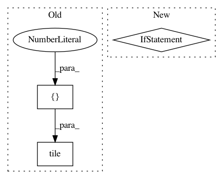

5a9e9622a7309794cc0cf511080fc2bd6b73a20a,deepctr/layers/sequence.py,SequenceMultiplyLayer,call,#SequenceMultiplyLayer#Any#Any#,756
Before Change
mask = tf.transpose(mask, (0, 2, 1))
embedding_size = key_input.shape[-1]
mask = tf.tile(mask, [1, 1, embedding_size])
key_input *= mask
if len(tf.shape(value_input)) == 2:
value_input = tf.expand_dims(value_input, axis=2)
value_input = tf.tile(value_input, [1, 1, embedding_size])
After Change
paddings = tf.zeros_like(value_input)
value_input = tf.where(mask, value_input, paddings)
if self.weight_normalization:
value_input = softmax(value_input,dim=1)
if len(value_input.shape) == 2:
value_input = tf.expand_dims(value_input, axis=2)
value_input = tf.tile(value_input, [1, 1, embedding_size])
In pattern: SUPERPATTERN
Frequency: 4
Non-data size: 3
Instances
Project Name: shenweichen/DeepCTR
Commit Name: 5a9e9622a7309794cc0cf511080fc2bd6b73a20a
Time: 2019-11-06
Author: wcshen1994@163.com
File Name: deepctr/layers/sequence.py
Class Name: SequenceMultiplyLayer
Method Name: call
Project Name: NifTK/NiftyNet
Commit Name: 6b48055fdfe3c628833ed26ca394ef2fb1d97f82
Time: 2017-10-26
Author: wenqi.li@ucl.ac.uk
File Name: niftynet/layer/resampler.py
Class Name: ResamplerLayer
Method Name: _resample_nearest
Project Name: asyml/texar
Commit Name: 1a7fa6010b7234bb9efddf761c9bf52af07dc347
Time: 2018-07-12
Author: zhitinghu@gmail.com
File Name: texar/modules/embedders/position_embedders.py
Class Name: PositionEmbedder
Method Name: _build
Project Name: GPflow/GPflow
Commit Name: 62972a279c51f80a890d813710f09d7d78065f6e
Time: 2016-07-07
Author: mv310@cam.ac.uk
File Name: GPflow/param.py
Class Name: Param
Method Name: get_samples_dict